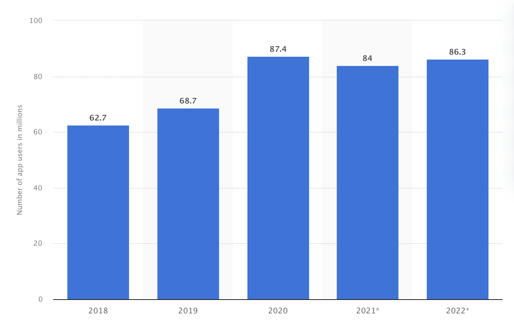

Overview
Livesimpl. An all-in-one application designed to simplify life. An app which provides individuals to meet their gym goals, improve their sleep and nutrition habits whilst allowing them to manage their work-life balance all in one. The app features an effective yet simple calendar for individuals like us to plan our days, weeks and time better. Livesimpl provides gym programs specific to your goals and needs and sets up a nutrition plan personally for its user based on the timeframe you have set. The app also tracks your overall sleep quality and sets a reminder for bedtime and an alarm.
Motivation
https://www.statista.com/statistics/1154994/number-us-fitness-health-app-users/

The above image showcases the amounts of adults per million that uses a health and fitness
app from the year 2018 to the year 2022 in the US alone.
Statistics indicate that from the year 2018, 62.7 million people used a health and fitness app
rising to 68.7 million users in 2019 following a substantial increase to 87.4 million users in
2020 reaching its all-time high. However, in the year 2021, the amounts of users decreased
slightly to 84 million users due to the impact of COVID-19 on many users. Yet, in the year
2022, health and fitness apps started to pick up from where they left off back to 86.3 million
users, just a small fraction over 1 million users less.
Description
The app once downloaded will ask you to create a profile for yourself requiring you to enter
details such as name, age, email, password, weight, height, nutrition such as, daily intake on
how many calories you’re consuming a day, body physique, how many days you’re willing to
dedicate to workout and the amount of time you want to give yourself to be the best version
of yourself. Once an account has been created, the app will calibrate and restart which once
opened again will contain different categories such as fitness, nutrition, sleep and calendar as
soon as you start the application.
In the fitness category, it will contain detailed breakdowns of the workout such as how to
perform a certain movement, what specific muscle group the exercise will target, how many
sets and repetitions would be required and the time frame of the whole workout itself.
Additionally, after we have many yearly users, we will integrate the app into an apple watch
where users are able to track the amount of calories they’ve burnt throughout the session as
well as their average heart rate and intensity of the workout.
In the nutrition category, it will contain your calories and macros. The nutrition category will
be based solely on whether or not you decide to track every food intake you put into your
body. Users are expected to weigh how much meat they use to create their food and choose
which meat they’re using whether it be pork, beef or chicken. At the end of the day, the app
will provide a breakdown of their calories providing the statistics on how many carbs, fat,
protein, salt and sugar has been consumer and whether they should decrease or increase it.
In the sleep category, it will contain your sleep habits such as what time you sleep and what
time you wake up. After a week of understanding your sleep pattern, it will provide what time
you should sleep, when you should wake up and how many hours you’re expected to sleep as
well as have the ability to monitor your sleep such as sleep talking, snoring and how many
times you may wake up during the night.
In the calendar, it will contain a timetable which breaks down into days and allows you to
categorise your meetings, work/study and gym as well as many more tasks you may have for
the day allowing you to set your day up in a more productive and efficient manner as the app
will be used many times during the day. If allowed, the app will send notifications to your
phone with tasks you have for the day 10 minutes prior to it or within the timeframe you set.
Tools and Technologies
https://flutter.dev/
For this project I will be using “Flutter” which is an open-source UI Software Development
Kit (SDK) to create the application which is trusted by many big companies such as Google,
BMW, ebay and many more which would require extensive amounts of coding to make the
app as effective as possible for the millions of users to use worldwide.
Skills Required
The skills required would be extensive background knowledge in coding and app
development.
Outcome
If the project is successful, it would change the lives of many users worldwide in different
aspects such as fitness, nutrition, sleep and work habits. Potentially, with the amount of users
I hope that the app will gain great amounts of media attention allowing it to be recognised by
big companies such as Nike providing discounts to those that use the app for the fitness
aspect as well as Hellofresh for the nutrition aspect of the app allowing everyone to get fit
and healthy as well as maintain it.